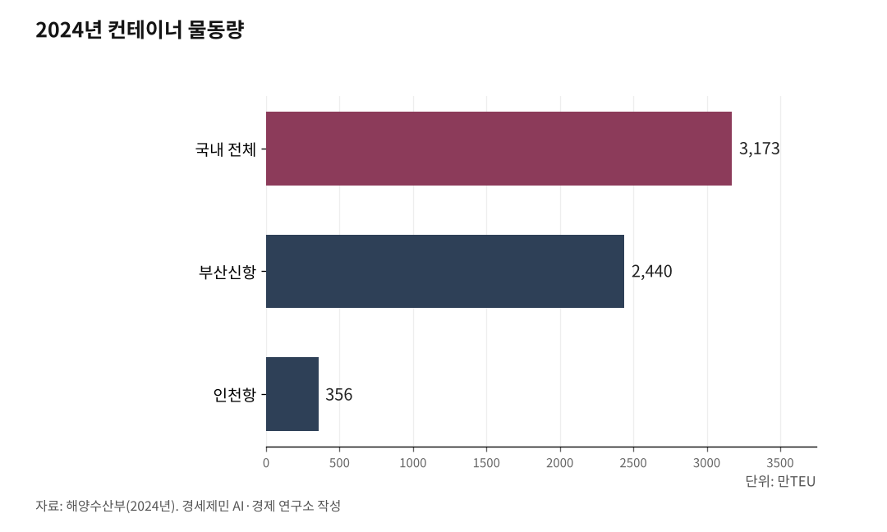

서해안벨트 핵심축 인천발 서해선 KTX [번외편 상]
부산항에서 인천항까지 — 서울을 거치지 않는 제2의 국가 대동맥
부산신항 2440만TEU, 인천항 356만TEU — 국가 물동량 88%를 쥔 두 항만에 직결 철도가 없다
시흥시청역 직결, 안중역 직결, 인천신항 인입선 — 세 곳이 끊겨 있다
[사진] 인천신항 컨테이너 터미널 전경. 자동화 크레인(ARMG)이 컨테이너를 쉴 새 없이 옮기고 있다. 이 항만에는 철도가 들어오지 않는다.

1. 인천항과 부산항, 철도로 연결되지 않는다
부산신항은 2024년 한 해 동안 2440만TEU(20피트 컨테이너 환산 단위)를 처리했다. 역대 최대치다. 인천항은 356만TEU로 마찬가지로 사상 최고 기록을 세웠다.
두 항만을 합치면 2796만TEU다. 국내 전체 물동량 3173만TEU(2024년, 해양수산부)의 88.1%에 이른다.
부산항은 환태평양 물류의 관문이다. 환적 물동량만 1350만TEU(2024년)로 동북아 허브 기능을 한다. 미국·일본·동남아 물류가 이 항만을 거쳐간다.
인천항은 환황해 물류의 관문이다. 수출의 66%가 중국으로 간다. 베트남·대만·홍콩·말레이시아를 포함하면 주요 5개국이 전체 수출의 82.5%를 차지한다.
국가 공급망의 두 축이다. 그런데 이 두 항만을 잇는 직결 철도가 없다.

2. 경부선은 이미 포화다
부산에서 인천으로 화물을 보내려면 경부선을 타고 서울 도심을 거쳐야 한다. 경부1선 서울~금천구청 구간은 하루 편도 179회(광역철도 제외)의 여객열차가 다닌다. 대한민국 철도에서 가장 붐비는 구간이다.
여기에 화물열차까지 끼어든다. 화물열차는 등급이 낮아 여객열차에 비켜준다. 대기하고, 양보하고, 밤에 달린다.
결과는 정시율 67.4%다. 세 번 중 한 번은 늦는다. 화물열차가 늦으면 화주가 떠난다. 화주가 떠나면 트럭에 실린다. 트럭은 고속도로로 간다. 고속도로가 막힌다.
경부선은 여객만으로도 벅찬 노선이다. 여기에 호남선·전라선·장항선의 교통량까지 모여든다. 부산항과 인천항 사이에 서울 도심을 거치지 않는 별도 화물 간선이 필요한 이유다.
[사진] 부산신항 전경. 2024년 2440만TEU를 처리해 세계 7위 컨테이너항만이다.
3. 서해안 루트 — 서울을 거치지 않는 제2의 대동맥
[사진·슬라이드1] 부산신항→서해선 고속망→인천신항 루트 개요. 총연장 약 450km, 도로 운송 8시간 구간을 KTX로 5.5시간에 연결하는 구상이다. 현재 철도수송분담률은 3.9%(톤·km 기준)에 불과하다. (퍼플렉시티 종합보고서 기반 인포그래픽)
경로는 이미 그려져 있다.
부산신항에서 경부선을 타고 평택역까지 올라온다. 평택역에서 평택선(22.8km, 단선 전철)으로 갈아타고 서쪽 안중역으로 간다. 약 14분이다.
안중역에서 서해선(90km 복선전철, 최고 시속 230km급 준고속선)을 타고 북쪽 시흥시청역까지 올라간다. 시흥시청역에서 경강선을 거쳐 수인분당선으로 직결한 뒤 월곶역에 닿는다. 월곶역에서 인천신항 인입선(13.2km)을 타고 인천신항에 도착한다.
서울 도심을 통과하지 않는다. 경부선 서울 구간의 포화와 무관하게 작동하는 별도 축이다.
뼈대는 이미 깔렸다. 경부선은 원래부터 있었다. 평택선은 2024년 11월 2일 전구간 전철화로 개통했다. 서해선 복선전철(홍성~서화성)도 같은 날 개통했다.
대곡~소사~원시 수도권 서해선도 운행 중이다. 이 구간들을 이어 붙이면 루트가 나온다. 문제는 세 군데가 끊겨 있다는 것이다.
4. 세 가지 열쇠 — 시흥시청 직결, 안중 직결, 인천신항 인입선
첫째, 시흥시청역에서 서해선과 수인분당선(송도 방향)을 상행·하행 모두 직결해야 한다.
시흥시청역은 서해선과 경강선이 만나는 교차점이다. 지금은 서해선에서 송도 방향으로 직결하는 선로 구조가 갖춰지지 않았다.
인천에서 출발한 열차가 서해선으로 곧바로 내려가지 못한다. 서해선에서 올라온 열차가 인천으로 곧바로 올라가지 못한다. 상행과 하행 모두 직결하는 연결선이 필요하다. 서해안벨트 철도의 북쪽 관문이다.
둘째, 안중역에서 서해선 하행과 평택선을 직결해야 한다.
안중역은 서해선과 평택선이 만나는 거점이다. 평택에서 올라오는 상행 열차는 안중역에서 서해선과 접속한다.
그러나 인천에서 서해선을 타고 남쪽으로 내려오는 하행 열차는 안중역을 그냥 통과해 홍성 방향으로 간다. 평택역으로 꺾을 수 없다. 하행 방향에서 평택선으로 진입하는 직결 연결선을 깔아야 한다.
서해안벨트 철도의 남쪽 분기점이다. 안중에서 홍성·익산 방향과 평택·경부선 방향으로 갈라지는 Y자 구조가 완성된다.
셋째, 월곶역에서 인천신항까지 13.2km 인입선을 건설해야 한다.
인천신항 인입선은 수인분당선 월곶역에서 분기해 송도 11공구를 지나 인천신항으로 연결되는 노선이다.
제3차 국가철도망 구축계획(2016~2025)에 신규 추진사업으로 포함됐으나, 제4차 국가철도망 구축계획(2021~2030)에서 후보 노선으로 밀렸다. 인천시는 제5차 국가철도망 구축계획(2026~2035)에 우선 반영해달라고 국토교통부에 건의한 상태다.
항만과 철도를 잇는 마지막 고리다.
셋 중 하나라도 빠지면 루트가 끊긴다. 시흥시청에서 끊기면 인천이 고립된다. 안중에서 끊기면 경부선과 만나지 못한다. 인입선이 없으면 화물이 인천신항에 닿지 못한다.
(하편에 계속)
※ 이 기사는 AI 프로그램 클로드를 활용해 작성했습니다.
참고문헌
· "2024년, 국내 항만 역대 최대 컨테이너 물동량 3,173만TEU 처리", 해양수산부 항만물류기획과, 2025.1.24., https://www.mof.go.kr/doc/ko/selectDoc.do?docSeq=60146
· "인천항, 2024년 '컨' 물동량 역대 최대기록 경신", 쉬핑뉴스넷, 2025.2.2., https://www.shippingnewsnet.com/news/articleView.html?idxno=63194
· "경부선", 위키백과, 2026.3.30. 접속, https://ko.wikipedia.org/wiki/경부선
· "서해선·포승평택선 11월 2일 운행···서부권 철도시대 열려", 평택시민신문, 2024.10.16., https://www.pttimes.com/news/articleView.html?idxno=73524
· "안중역", 나무위키, 2026.3.30. 접속, https://namu.wiki/w/안중역
· "평택선", 나무위키, 2026.3.30. 접속, https://namu.wiki/w/평택선
· "[철도 핫클릭 ②] 대장홍대선 연장·제2공항철도 국가철도망 발표 임박", 인천투데이, 2025.12.26., https://www.incheontoday.com/news/articleView.html?idxno=313001
· "국토부 '장대화물열차' 계획 '수인선 인천신항 지선' 기대", 인천투데이, 2023.4.25., https://www.incheontoday.com/news/articleView.html?idxno=229328